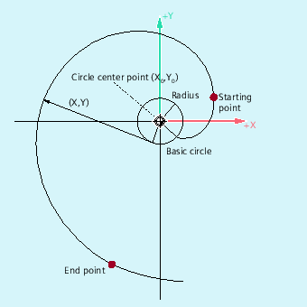
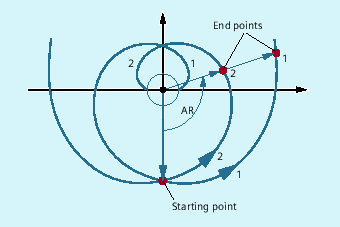
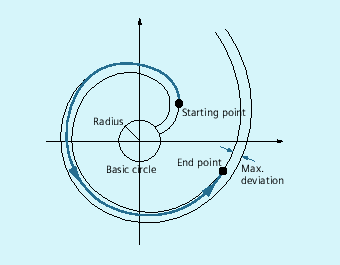

The involute of a circle is the path taken by the end of an idealized string as it unwraps around a curve.
Involute interpolation allows path trajectories along an involute. It is executed in the plane in which the basic circle is defined and runs from the programmed starting point to the programmed end point.
The end point can be programmed in two ways:
Directly via Cartesian coordinates
Indirectly by specifying an opening angle (also refer to the programming of the opening angle for circular-path programming)
If the starting point and the end point are in the plane of the basic circle, then, analogous to the helical interpolation for circles, there is a superimposition to a curve in space.
With additional specification of paths perpendicular to the active plane, an involute can be traversed in space (comparable to the helical interpolation for circles).
| Command to travel on an involute in the clockwise direction | |
| Command to travel on an involute in the counter-clockwise direction | |
| Direct programming of the end point in Cartesian coordinates | |
| Interpolation parameters for defining the center point of the basic circle in Cartesian coordinates Note: | |
| Radius of the basic circle | |
| Indirect programming of the end point by specifying an opening angle (angle of rotation) The origin of the opening angle is the line from the circle center point to the starting point. | |
| The path of the involute moves away from the basic circle. | |
| The path of the involute moves towards the basic circle. For AR < 0, the maximum angle of rotation is restricted by the fact that the end point must always be outside the basic circle. | |
Indirect programming of the end point by specifying an opening angle
| Notice |
Opening angle undefinedWhen the end point is indirectly programmed by specifying an opening angle AR, the sign of the angle must be taken into account, as a sign change would result in another involute and therefore another path. |
This is demonstrated in the following example:
The specifications of the radius and center point of the basic circle as well as the starting point and direction of rotation (INVCW/INVCCW) are the same for involutes 1 and 2. The only difference is in the sign of the opening angle:
With AR > 0, the path is on involute 1 and end point 1 is approached.
With AR < 0, the path is on involute 2 and end point 2 is approached.
Both the starting point and the end point must be outside the area of the basic circle of the involute (circle with radius CR around the center point specified by I, J, K). If this condition is not satisfied, an alarm is generated and the program processing is canceled.
The two options for programming the end point (directly via Cartesian coordinates or indirectly via the specification of an opening angle) are mutually exclusive. Consequently, only one of the two programming options may be used in a block.
If the programmed end point does not lie exactly on the involute defined by the starting point and basic circle, interpolation takes place between the two involutes defined by the starting and end points (see following figure).
The maximum deviation of the end point is determined by a machine data (→ machine manufacturer). If the deviation of the programmed end point in the radial direction is greater than the value defined by this MD, then an alarm is generated and program processing is canceled.
| Program code | Comment |
|---|---|
| N10 G1 X10 Y0 F5000 | ; The starting position is approached. |
| N15 G17 | ; Selection of the X/Y plane as machining plane. |
| N20 INVCCW X32.77 Y32.77 CR=5 I-10 J0 | ; Counter-clockwise involute, end point in Cartesian coordinates. |
| N30 INVCW X10 Y0 CR=5 I-32.77 J-32.77 | ; Clockwise involute, starting point is end point from N20, new end point is starting point from N20, new circle center point refers to a new starting point and is the same as the old circle center point. |
| ... |
| Program code | Comment |
|---|---|
| N10 G1 X10 Y0 F5000 | ; The starting position is approached. |
| N15 G17 | ; Selection of the X/Y plane as machining plane. |
| N20 INVCCW CR=5 I-10 J0 AR=360 | ; Counter-clockwise involute and away from the basic circle (as positive angle specification) with one full revolution (360 degrees). |
| ... |